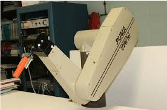

Table Of Contents
Abstract
Robotic-assisted surgery has become a rapidly advancing technology within modern healthcare, helping surgeons perform procedures with greater precision while benefiting patient recovery. This paper explores the growth of surgical robots, their success rates, and the positive clinical outcomes reported compared to traditional approaches. With minimally invasive techniques, robotic surgery has demonstrated reductions in postoperative pain, blood loss, and overall length of hospital stay. The implementation of systems such as the da Vinci Surgical System has also improved surgeon control and accuracy during complex operations. However, robotic surgery is not without drawbacks, including high financial costs, longer setup times, and the need for specialist training. Through reviewing published research and patient outcome data, this paper evaluates how surgical robots are reshaping the future of healthcare and discusses the balance between technological benefits and ongoing challenges.
Introduction
Robotic surgery, also known as robot-assisted surgery, is an approach for healthcare providers which enables the use of more minimally invasive procedures. Resulting in fewer wound complications, faster recovery time and greater surgical accuracy, giving patients better overall healthcare. This option of surgery is growing every year as the technology improves, meaning a greater number of people are more inclined to choose this procedure as higher rates of success occurs in each new patient taking this operation each year.
Why Surgical Robots?
The demand for surgical robots continues to rise worldwide, and healthcare services are investing more each year to improve patient outcomes. As technology evolves, future systems may offer greater autonomy and artificial intelligence support, making procedures even safer and more efficient. Surgeons who use the robotic system find that it can increase precision, flexibility and control during the operation. The robotic system also allows them to better see the site, compared with traditional surgical methods. Using robotic surgery, surgeons can perform delicate and complex procedures that may be difficult or impossible with other methods.Robotic surgery often is done through tiny openings in the skin and other tissues. This approach is called a minimally invasive surgery. The benefits of minimally invasive surgery include:Fewer complications, such as surgical site infection. Less pain and blood loss. A shorter hospital stay and quicker recovery. Smaller, less noticeable scars. Patients are more pleased with the outcomes of the operation, meaning patients can live there life without worring about the possiblity if a complication will appear.
When Were They First Used
The first surgical robot, PUMA560, was introduced in 1985 to perform a CT-guided brain biopsy. They were industrial robotic arms adapted to support surgeons in procedures that demanded extremely high accuracy. Engineers and surgeons recognised that certain aspects of surgery, such as steady positioning, millimetre-level precision, and the ability to repeat fine movements without fatigue, were areas where machines could outperform human hands. This was especially relevant for neurosurgery and urology, where a minor slip could cause nerve damage or affect vital structures. In 2000, the da Vinci system (Intuitive Surgical Inc, Sunnyvale, CA) became the first assisting surgical robot to receive FDA approval to assist surgeons in performing laparoscopic surgery.
How Successful Are Sugical Robots?
Since surigcal robots have been introduce, over 1.28 million patients found that robot-assisted laparoscopic surgery (RAS) had comparable results to conventional laparoscopic surgery across many outcomes (blood loss, conversion to open surgery, complication rates, readmissions, infections), and in “nearly all cases” resulted in shorter hospital stays. For certain cancer surgeries — e.g. colon cancer — a recent review (2020–2024) found that robotic surgery was associated with shorter hospital stay and higher lymph-node yield, which can be important for cancer staging and long-term outcomes. In rectal cancer surgery, a meta-analysis of 19,731 patients found slightly better 30-day overall survival to discharge for robotic-assisted surgery (99.6%) vs standard laparoscopy (98.8%) — though the difference is small. A 2024 meta-analysis in general surgery reported that robotic surgery led to significantly less blood loss compared with laparoscopic surgery, and lower rates of conversion to open surgery (2.09% in robotic vs 3.64% laparoscopic). Some studies find robotic surgery leads to fewer blood transfusions and shorter hospital stays than open surgery, and sometimes even versus laparoscopy.
Advantages & Disadvantages
| Advantages | Disadvantages |
|---|---|
| Improved surgical precision and control | High cost of equipment and maintenance |
| Smaller incisions, less scarring | Requires specialist training for surgeons |
| Reduced recovery time for patients | Potential for technical errors or malfunctions |
| Shorter hospital stays up to 0.5-1 day shorter | Longer (set-up, docking adds time) |
| Lower Blood loss (especially vs open) |
Results
Based on recent studies, the clinical outcomes of robotic-assisted surgery continue to show improvements across a wide range of procedures. Results from a 2024 analysis in general surgery show that robotic surgery significantly reduces blood loss and reduces the chances of converting to open surgery during the procedure. This can improve patient safety and reduce the likelihood of complications.In addition, hospital records have shown that patients receiving robotic procedures for colorectal or urological cancer experienced shorter recovery times and left hospital on average half a day to one full day earlier than patients undergoing standard laparoscopic surgery. Faster discharge can reduce healthcare costs and improve patient wellbeing. Patient satisfaction is also notably higher due to smaller incision scars and a faster return to daily activities. Although survival rates for cancer treatments remain very similar between laparoscopic and robotic approaches, the reduced trauma to the body suggests long-term quality-of-life improvements. Overall, the data suggests that robotic surgery provides clear short-term patient benefits, while long-term advantages continue to be reviewed through ongoing clinical trials and comparisons with existing surgical methods.Conclusions
Surgical robots have made a major impact on healthcare by improving the precision and quality of many operations while reducing recovery times and postoperative complications. Evidence supports that robotic procedures are at least as safe and effective as conventional methods and, in some cases, offer enhanced clinical outcomes such as shorter hospital stays and fewer conversions to open surgery. However, healthcare systems must carefully consider the financial costs, the need for specialised surgeon training, and the extended setup times that robotic surgery currently requires. Not every hospital can afford this technology, and not every patient necessarily benefits more than they would from standard laparoscopic options. Despite these current limitations, the continued development of robotic systems indicates that they will become increasingly common, more advanced, and more affordable — shaping the future of modern surgery.
References
- Ann Med Surg (2022) Embracing robotic surgery in low- and middle-income countries: Potential benefits, challenges, and scope in the future
- Tzujung Lai, Campbell Roxburgh, Kathleen Boyd, Janet Bouttell (2024) (PDF) Clinical effectiveness of robotic versus laparoscopic and open surgery: an overview of systematic reviews
- Dr Sakran (2023) Robotic Technology in Emergency General Surgery Cases in the Era of Minimally Invasive Surgery | Surgery | JAMA Surgery | JAMA Network
- Li, Zhenshun MDa; Zhou, Wei MDa; Yang, Wanli MDa; Miao, Yan MDa; Zhang, Yujie MDb; Duan, Lili MDa; niu, Liaoran MDa; Chen, Junfeng MMa; Fan, Aqiang MMa; Xie, Qibin MMa; Wei, Siyu MMa; Bai, Han MMa; Wang, Chenyang MMa; Chen, Xi MMa; Han, Yu MDc,*; Hong, Liu MDa,* (2024) International Journal of Surgery
- Roxana Loriana Negrut Adrian Cote, Vasile Aurel Caus, Adrian Marius Maghiar (2024) Systematic Review and Meta-Analysis of Laparoscopic versus Robotic-Assisted Surgery for Colon Cancer: Efficacy, Safety, and Outcomes—A Focus on Studies from 2020–2024
- Storm Chabot, Jean Calleja-Agius, Tim Horeman (2024) A Comparison of Clinical Outcomes of Robot-Assisted and Conventional Laparoscopic Surgery
- J. Clin. Med (2025) Beyond Da Vinci: Comparative Review of Next-Generation Robotic Platforms in Urologic Surgery"
- Wah JNK (2025) The robotic revolution in cardiac surgery - PMC